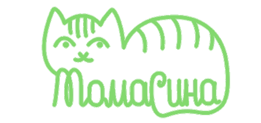

О приюте "Томасина"
Частный приют для кошек в Иркутской области
Приют был основан несколько лет назад. Мы прошли путь от содержания животных в квартире до строительства собственного помещения в селе Хомутово. Сейчас в приюте
содержится около 120 КОШЕК. Каждая из них получает необходимую ветеринарную помощь, любовь и заботу.
